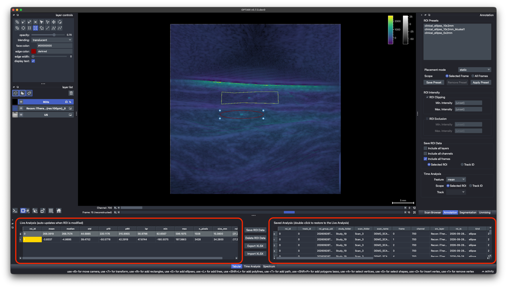

ROI Annotation¶
Drawing and editing ROIs¶
ROIs are drawn on the ROIs layer, directly on top of the image, using napari's built-in shape tools. To interact with ROIs, make sure the ROIs layer is selected. ROIs can be placed either by using the buttons in the layer controls panel (hovering will show their functions), or by using keyboard shortcuts:
E— draw an ellipse ·R— draw a rectangle ·P— draw a polygon (double-click to finish)S— select an ROI to move or resize it ·A— select all ROIsDelete/Backspace— delete the selected ROI(s)Ctrl+C/Ctrl+V(Cmdon macOS) — copy/paste selected ROI(s)
Full list in Keyboard Shortcuts.
Each ROI shape is labelled with its roi_id, and optionally its track ID (roi_id/track_id). The track ID is what links the same ROI across frames, e.g. when placed with a preset's All Frames scope.
Tip
On macOS, ROI deletion by keyboard, when a row is selected in the Live Analysis table, requires the Delete (forward-delete) key (fn + Backspace), not just the ordinary Backspace.
Tip
The line shape (shortcut L) can be used as a measurement tool for distances. Simply draw a line along the distance you want to measure. The size_mm feature in the Live Analysis table will display its length in mm — see FAQ.
Live Analysis vs. Saved Analysis tables¶
OPTARI uses a dual-table system so you can get live information to place the ROI, but choose only selected ROIs for analysis:

Live Analysis¶
The entries in the Live Analysis table recompute automatically whenever you draw, move, resize, an ROI, or scroll to a different wavelength or chromophore. A ROI always belongs to a single frame (the one selected at ROI creation). To duplicate a ROI across multiple frames, you can either use copy paste on the selected ROI, or save the selected ROI to the ROI Library and place it again on the next scan.
Saved Analysis¶
The Saved Analysis table is used to collect ROI data for subsequent analysis. Press Shift+Ctrl+S (Shift+Cmd+S) or use the Save ROI Data button to add the current ROI measurements to the Saved Analysis table. The entries in this table are frozen, and persist for the entire runtime of the application. To delete an entry from the Saved Analysis table, select the row and press the Delete ROI Data button.
Clicking the Export XLSX button will export the entries in the Saved Analysis table to a Microsoft Excel file that can be used for further analysis.
Sometimes it can be helpful to use the same ROI across multiple layers (i.e. reconstructions and unmixed), channels (i.e. multiple wavelengths or chromophores), or frames (if motion is low). This can be achieved by checking the Include all layers/frames/channels checkboxes in the Annotation tab in the right dock. If checked, instead of a single entry, the Save ROI Data button will add an entry for every layer/frame/channel in the selected scan to the Saved Table.
With Include all frames checked, a second choice appears below it, controlling which record each frame is measured with (similar to scope for Time Analysis)
- Selected ROI (default) — the ROI you selected, applied on every frame.
- Track ID — if the selected ROI belongs to a tracked group (e.g. placed with a preset's
All Framesscope), each frame is measured on that frame's own ROI record instead. A frame the track has no record on is skipped.
Restoring a saved ROI to the Live view¶
Double-click a row in the Saved Analysis table to put that ROI back into the Live Analysis and viewer.. To bring back several frames at once, select the rows and press Enter.
ROI Features¶
ROI feature describes a property of the ROI or a statistical measure by which the intensities in the ROI are summarized. A list of included features can be found in the Configuration Schema. Which features appear in the Live Analysis table can be configured.
Note
This selection only affects what's displayed in the table. It's an option to visually declutter the table. Saving or exporting a measurement always computes and stores the full feature set, regardless of which columns are currently visible.
Intensity Handling¶
The Annotation dock lets you choose how out-of-range pixel values within an ROI are handled before statistics are computed:
- ROI Clipping — clamp values to a min/max range.
- ROI Exclusion — drop out-of-range pixels entirely before computing statistics.
Setting values here automatically updates the entries in the Live Analysis table. With both boxes unchecked, pixel values are used unchanged. Batch runs never apply this filter, so their results depend on the plan alone.
Every saved measurement records the filter it was computed with in the intensity_filter (none, clip or exclude), filter_min and filter_max columns. They are always part of the exported table and can be shown in the app via Settings ▸ ROI Table.
ROI Presets¶
To place the same ROI consistently across multiple frames, scans, or clinical studies, a ROI can be saved to the ROI Presets library.
- Place a ROI: Select a ROI preset from the list by clicking on it. Additional information about that ROI will be shown (if available). To place the ROI on the viewer, double-click the list entry, or click the Apply Preset button.
- Scope:
Selected Framewill place the ROI only on the currently selected frame in the viewer.All Frameswill duplicate the ROI across all the frames in the selected layer. - Create a Preset: Select a ROI shape in the viewer and click the Save Preset button. A popup will ask you for a ROI name, and optional description and tissue class attributes.
The ROI Presets library is constantly synced with .json files. This file can be used to share ROI shapes across computers or institutions.
Note
When a ROI preset is applied across multiple frames using the Scope All Frames setting, these ROIs belong to the same track. When adding one of these ROIs to the Saved Analysis table with Include all frames checked and Track ID selected, they will all be saved on the record they actually have on each frame, even if they were moved or modified. That same track can then be plotted in Time Analysis with Scope set to Track ID, measuring each frame on its own record instead of a single fixed one.
Placement Mode¶
By default, ROI placement is set to static, meaning the ROI will be placed at the exact coordinates defined in the preset.
However, if it is set to automatic, OPTARI will try to automatically place the ROI in the tissue that is defined as the position attribute in the preset, ignoring the coordinates. This requires the scan to have a Segmentation layer that contains a class with the same name as the one set in the position attribute. If no Segmentation layer or no corresponding tissue class is found, placement fails with an error. Switch the mode to static to place it at its saved coordinates instead.
With Scope set to All Frames, automatic placement re-anchors independently on each frame's own segmentation mask rather than copying the first frame's position everywhere: a frame the tissue class isn't present on is skipped.